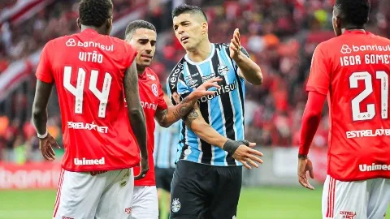
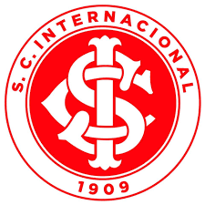

HISTÓRIA DO CLUBE DO POVO
O Museu do Inter ficou pequeno para tantas taças conquistadas no período e precisou reformar sua estrutura.
Além dos troféus da Libertadores e do Mundial de Clubes, o Colorado ainda conquistou o inédito título da Copa Sul-Americana, em 2008, ganhando, assim,
o apelido de ‘Campeão de Tudo’. Na campanha, foram superados adversários
como Boca Juniors, Grêmio, Universidad Católica, Chivas e, na final, o forte Estudiantes, do craque Verón, campão da Libertadores no ano seguinte.
Ainda foram celebrados títulos como o da Recopa, em 2007, formando a Tríplice Coroa, e a Dubai Cup,
no ano seguinte, sobre a poderosa Inter de Milão, de craques como Ibrahimovic, Crespo, Zanetti e Materazzi..

Notícias
Inter domina, vence o Grêmio no GreNal 440 e dá resposta após queda traumática na Libertadores.
O Internacional dominou boa parte do GreNal 440 neste domingo (8), venceu o Grêmio por 3 a 2 no Beira-Rio, pela 26ª
rodada do Campeonato Brasileiro, e deu rápida reposta após a eliminação traumática da CONMEBOL Libertadores para o Fluminense na última quarta-feira (4).
Enner Valencia, Wanderson e Alan Patrick maracaram para o time colorado, enquanto João Pedro e Luis Suárez fizeram para a equipe tricolor.
